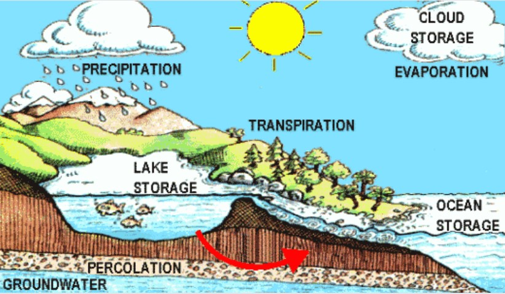
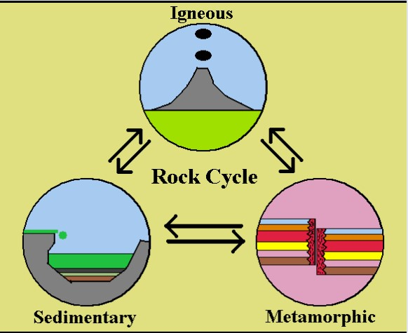

Discuss how either the rock cycle or the hydrologic cycle helps geologists study the Earth and its history.


Rock Cycle
This is called geology. It can be used to study Earth's history. Typically, geologists study plate tectonics & continental drift when discussing the rock cycle. They also discuss fossils that they find. I like to look at the law of superposition and Pangea when talking about the rock cycle as it relates to Earth's History. Your job is to explain how you know what happened in the Earth's past by looking at the rocks.
Don't forget to use an entire paragraph and facts to support your answer.
Hydrologic Cycle
This is known as the water cycle. It can be used to study Earth's history.
Typically, geologists study erosion & weathering when discussing the water cycle as it relates to Earth's History.
In fact, geological structures such as the Grand Canyon were made by the water cycle.
When geologists study the hydrologic cycle, they are looking to determine how Earth has changed over time.
You can even discuss the ice age as it is part of the water cycle.
Your job is to explain how you know what happened in the Earth's past by studying the various forms of water.
Don't forget to use an entire paragraph and facts to support your answer.